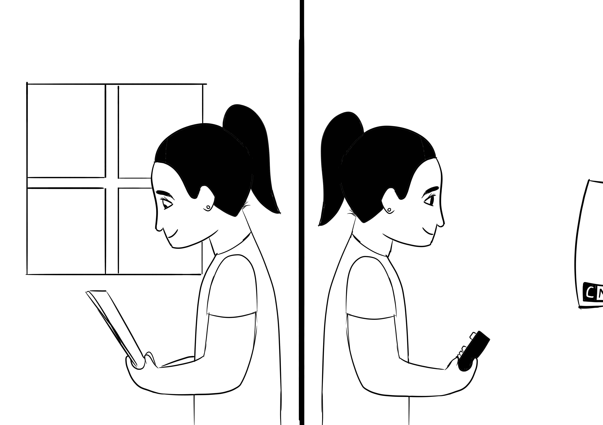

A dualidade da aprendizagem
Essa imagem mostra duas formas utilizadas para o estudo, na esquerda podemos observar uma menina buscando conhecimento através de livros, como se fazia antigamente, já na direita podemos ver outra menina, agora aprendendo através do celular, como muitos jovens fazem hoje em dia.